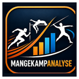

KLAR
Åpne analyse →
EM Birmingham 2026
Ferdig analyse av startfeltet

Mangekampanalyse ProAnalyseplattform for internasjonal mangekamp
Velg en aktuell internasjonal konkurranse og åpne en ferdig analyse av hele startfeltet. Mangekampanalyse Pro gir media, trenere, utøvere og publikum rask tilgang til verdensranking, personlige rekorder, toppnivå og utnyttelsesgrad.
Windows 10/11 · enkel installasjon
Ferdig analyse av startfeltet
Publiseres når startlisten er klar
Brukervennlig fra første sekund
De viktigste aktuelle mangekampene leveres ferdig i programmet. Du slipper å finne og registrere startfeltet selv.
Åpne EM, VM, OL eller et aktuelt Combined Events-stevne fra forsiden.
Hele startfeltet er klart med relevante profil-, PB- og rankingdata.
Sammenlign utøverne, disiplinene, toppnivået og hvor godt potensialet er utnyttet.
Aktuelle konkurranser
Mangekampanalyse Pro prioriterer de viktigste kommende mesterskapene og internasjonale stevnene. Nye ferdige analyser legges til fortløpende.
Innsikt for redaksjon og ekspertbruk
Se startfeltets internasjonale nivå og utøvernes plassering i verdensrankingen.
Personlige rekorder i enkeltøvelsene samles til et teoretisk mangekampresultat.
Sammenlign faktisk mangekamp-PB med teoretisk PB og avdekk uutnyttet potensial.
Identifiser styrker, svakheter og disipliner som kan avgjøre konkurransen.
Sorter og analyser utøverne på tvers av nøkkeltall i én samlet oversikt.
Konkurranser og analyser lagres lokalt på brukerens egen Windows-maskin.
Trenger du en annen konkurranse?
Funksjonen er fortsatt tilgjengelig: finn den offisielle startlisten på World Athletics eller European Athletics, kopier nettadressen og lim den inn i programmet.
Mangekampanalyse Pro for Windows
Last ned installasjonsfilen, åpne den og følg veiviseren. Python eller andre utviklerverktøy er ikke nødvendig.
Før programmet er digitalt signert kan Windows vise en SmartScreen-advarsel om ukjent utgiver.